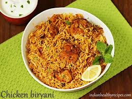

Chicken Biriyani

Description
Biriyani, a spicy chicken and rice dish, is one of the most well-known Indian-Pakistani dishes.
Ingredients
- 2.5 tbsp olive oil
- 3 tbsp plain yoghurt
- 2 tbsp distilled white vinegar
- 1 medium onion, sliced
- 2 medium tomatoes, chopped
- 2 small green chille peppers
- 2 cloves garlic, crushed
- 1 tbsp ginger paste
- 2 tbsp garam masala
- 1 tbsp dried mint
- salt and pepper to taste
- 5 sprigs cilantro
- 1(3lbs) whole chicken, skin removed and cut into pieces
- 2 quarts water
- 4 cups uncooked basmati rice
- 1 cinnamon stick
- 1 bay leaf
- 4 pods green cardamom
- 1 pod black cardamom
- 1/4 tsp powdered yellow food colouring
Steps
- Heat olive oil in a large skillet over medium heat. Stir in yogurt and vinegar. Add onion; cook and stir until golden and tender. Add tomatoes, chile peppers, garlic, and ginger paste. Cook and stir until tomatoes are tender. Season with garam masala, mint, salt, and pepper. Stir in cilantro.
- Place chicken into tomato-onion mixture in the skillet. Reduce heat to medium-low, cover, and continue cooking, stirring occasionally, until chicken is no longer pink in the center and the juices run clear, about 45 minutes. An instant-read thermometer inserted into meat should read at least 165 degrees F (74 degrees C).
- Meanwhile, bring water and rice to a boil in a large pot. Mix in cinnamon stick, bay leaf, green cardamom, and black cardamom. Season with salt. Cover, reduce heat to low, and simmer until rice is tender and water is absorbed, about 20 minutes. Discard cinnamon stick, bay leaf, and cardamom.
- Spread 1/2 of the cooked rice in the bottom of a large serving dish. Pour chicken mixture on top. Cover with remaining cooked rice. Sprinkle with food coloring; mix to serve.
Return